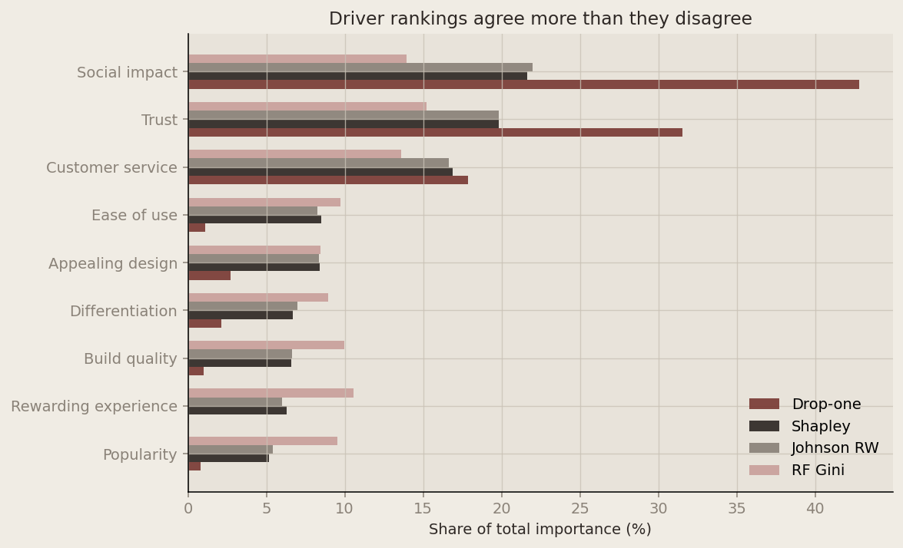
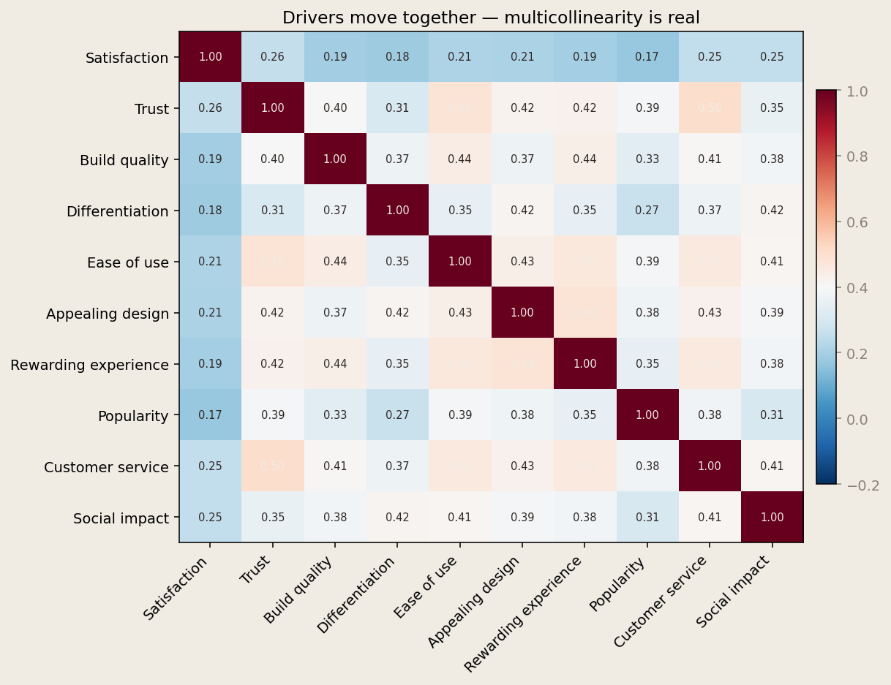
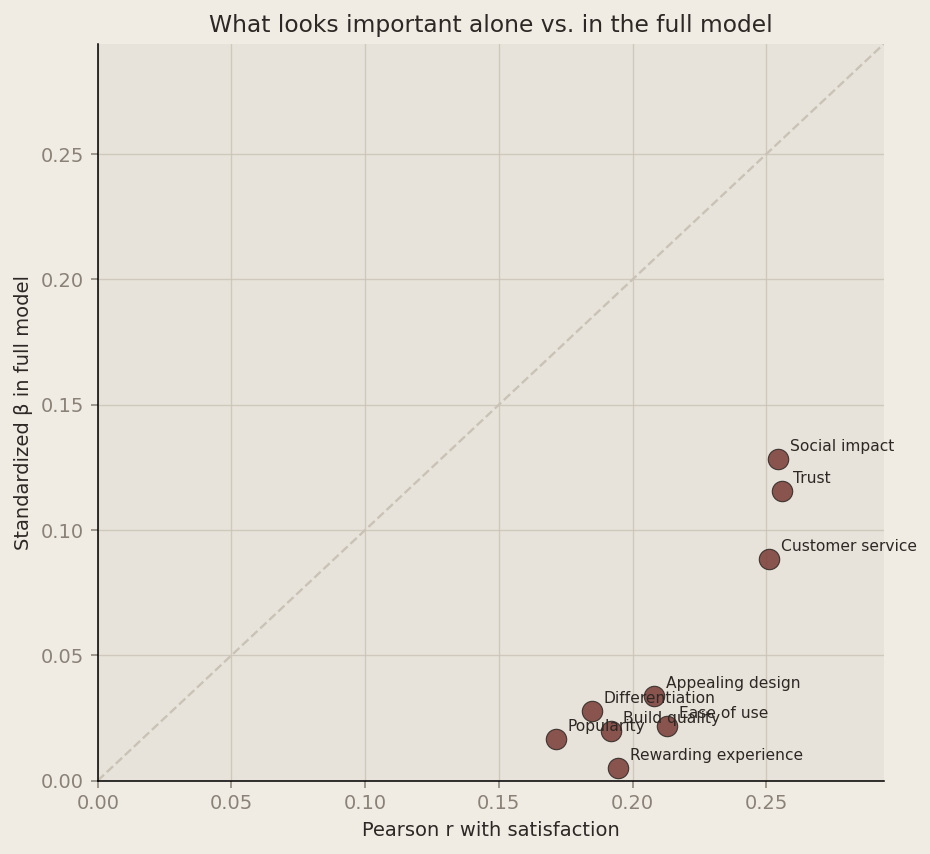

Introduction
Customer satisfaction surveys usually ask people to rate a brand on several attributes — trust, ease of use, service quality, and so on. The hard question is not whether these attributes correlate with overall satisfaction, but which ones matter most once the predictors overlap.
That is key drivers analysis: rank attributes by importance using methods that behave sensibly under multicollinearity. This post replicates the comparison table from slide 75 of the course key-drivers deck. For each of nine brand attributes I compute:
- Pearson correlation with satisfaction (bivariate, no controls)
- Standardized regression coefficient from a multiple linear model
- Drop-one usefulness — how much \(R^2\) falls when a predictor is removed
- Shapley values (LMG decomposition) — fair allocation of \(R^2\) across predictors
- Johnson’s relative weights — orthogonalized decomposition that sums to \(R^2\)
- Random forest mean decrease in Gini — nonlinear importance from an ensemble of trees
Shapley values are implemented from scratch using \(R^2\) as the fit metric; Johnson weights follow the standard correlation-matrix algorithm (Tonidandel & LeBreton, 2015).
The Data
The file data_for_drivers_analysis.csv contains 2,553 survey responses across two brands. Each row records whether a respondent agreed (1) or disagreed (0) with nine attribute statements, plus an overall satisfaction score on a 1–5 scale.
Show Python code
from itertools import combinations
from math import factorial
from pathlib import Path
import matplotlib.pyplot as plt
import numpy as np
import pandas as pd
from IPython.display import Markdown, display
from numpy.linalg import eig, inv
from scipy import stats
from sklearn.ensemble import RandomForestRegressor
from sklearn.linear_model import LinearRegression
from sklearn.preprocessing import StandardScaler
DATA_DIR = Path(".")
if not (DATA_DIR / "data_for_drivers_analysis.csv").exists():
DATA_DIR = Path("blogs/HW5")
DRIVERS = [
"trust", "build", "differs", "easy", "appealing",
"rewarding", "popular", "service", "impact",
]
OUTCOME = "satisfaction"
LABELS = {
"trust": "Trust",
"build": "Build quality",
"differs": "Differentiation",
"easy": "Ease of use",
"appealing": "Appealing design",
"rewarding": "Rewarding experience",
"popular": "Popularity",
"service": "Customer service",
"impact": "Social impact",
}
ACCENT = "#2e2825"
BG = "#f0ece4"
PANEL = "#e8e3da"
GRID = "#c9c2b6"
HIGHLIGHT = "#7a3b35"
PALETTE = ["#7a3b35", "#2e2825", "#8a8278", "#c9a09b", "#6b6560"]
def style_axes(ax):
ax.set_facecolor(PANEL)
ax.figure.set_facecolor(BG)
ax.grid(True, axis="both", color=GRID, linewidth=0.7, alpha=0.8)
for spine in ("top", "right"):
ax.spines[spine].set_visible(False)
ax.tick_params(colors="#8a8278")
ax.xaxis.label.set_color(ACCENT)
ax.yaxis.label.set_color(ACCENT)
ax.title.set_color(ACCENT)
df = pd.read_csv(DATA_DIR / "data_for_drivers_analysis.csv")
X = df[DRIVERS].to_numpy(dtype=float)
y = df[OUTCOME].to_numpy(dtype=float)
n, p = X.shape
summary = pd.DataFrame({
"n": [n],
"brands": [df["brand"].nunique()],
"mean satisfaction": [df[OUTCOME].mean()],
"sd satisfaction": [df[OUTCOME].std(ddof=1)],
})
display(Markdown("**Sample overview**"))
display(summary.round(3))Sample overview
| n | brands | mean satisfaction | sd satisfaction | |
|---|---|---|---|---|
| 0 | 2553 | 10 | 3.387 | 1.172 |
All regression-based metrics use a linear model predicting standardized satisfaction from the nine binary attribute indicators.
Show Python code
def r2_subset(indices):
if not indices:
return 0.0
idx = list(indices)
return LinearRegression().fit(X[:, idx], y).score(X[:, idx], y)
def shapley_r2(values):
"""LMG / Shapley decomposition of R² for linear regression."""
n_features = values.shape[1]
shapley = np.zeros(n_features)
for j in range(n_features):
others = [i for i in range(n_features) if i != j]
total = 0.0
for k in range(len(others) + 1):
for subset in combinations(others, k):
subset = list(subset)
weight = factorial(k) * factorial(n_features - k - 1) / factorial(n_features)
total += weight * (r2_subset(subset + [j]) - r2_subset(subset))
shapley[j] = total
return shapley
def johnson_relative_weights(corr_xx, corr_xy):
"""Johnson's relative weights; raw weights sum to model R²."""
evals, evecs = eig(corr_xx)
evals = evals.real
evecs = evecs.real
num_x = len(corr_xy)
diag = np.zeros((num_x, num_x), float)
diag[np.diag_indices(num_x)] = evals
delta = np.sqrt(diag)
coef_xz = evecs @ delta @ evecs.T
coef_yz = inv(coef_xz) @ corr_xy
rsquare = np.sum(np.square(coef_yz))
raw_weights = np.square(coef_xz) @ np.square(coef_yz)
return raw_weights, rsquare
# Pearson correlations
pearson = np.array([stats.pearsonr(X[:, i], y)[0] for i in range(p)])
# Standardized betas
scaler_x = StandardScaler()
scaler_y = StandardScaler()
x_std = scaler_x.fit_transform(X)
y_std = scaler_y.fit_transform(y.reshape(-1, 1)).ravel()
full_model = LinearRegression().fit(x_std, y_std)
std_betas = full_model.coef_
full_r2 = full_model.score(x_std, y_std)
# Drop-one usefulness (ΔR²)
drop_one = np.array([full_r2 - r2_subset([j for j in range(p) if j != i]) for i in range(p)])
# Shapley (hand-coded)
shapley = shapley_r2(X)
# Johnson relative weights
corr_all = df[[OUTCOME] + DRIVERS].corr()
corr_xx = corr_all.iloc[1:, 1:].to_numpy()
corr_xy = corr_all.iloc[1:, 0].to_numpy()
johnson_rw, johnson_r2 = johnson_relative_weights(corr_xx, corr_xy)
# Random forest Gini importance
rf = RandomForestRegressor(n_estimators=500, random_state=42)
rf.fit(X, y)
rf_gini = rf.feature_importances_
display(Markdown(f"**Full-model** $R^2 = {full_r2:.3f}$ — modest, which is typical when satisfaction has many unmeasured causes."))Full-model \(R^2 = 0.109\) — modest, which is typical when satisfaction has many unmeasured causes.
Results
The table below matches the slide-75 layout. Correlations and standardized betas are shown as-is. Usefulness, Shapley, and Johnson weights are \(R^2\) contributions (they sum to the model’s \(R^2 \approx 0.109\)). The last column shows random-forest Gini importance, rescaled to percentages for comparability.
Show Python code
def markdown_table(headers, rows):
lines = [
"| " + " | ".join(headers) + " |",
"| " + " | ".join(["---"] * len(headers)) + " |",
]
for row in rows:
lines.append("| " + " | ".join(row) + " |")
return "\n".join(lines)
results = pd.DataFrame({
"driver": DRIVERS,
"pearson": pearson,
"std_beta": std_betas,
"drop_one": drop_one,
"shapley": shapley,
"johnson_rw": johnson_rw,
"rf_gini": rf_gini,
})
results["johnson_pct"] = results["johnson_rw"] / johnson_r2 * 100
results["rf_gini_pct"] = results["rf_gini"] / results["rf_gini"].sum() * 100
results = results.sort_values("shapley", ascending=False)
rows = []
for _, row in results.iterrows():
rows.append([
LABELS[row["driver"]],
f"{row['pearson']:.3f}",
f"{row['std_beta']:.3f}",
f"{row['drop_one']:.4f}",
f"{row['shapley']:.4f}",
f"{row['johnson_rw']:.4f}",
f"{row['johnson_pct']:.1f}%",
f"{row['rf_gini_pct']:.1f}%",
])
display(Markdown(markdown_table(
[
"Driver", "Pearson *r*", "Std β", "Drop-one ΔR²",
"Shapley", "Johnson RW", "Johnson %", "RF Gini %",
],
rows,
)))
display(Markdown(
f"**Model fit:** $R^2 = {full_r2:.4f}$ "
f"(Shapley sum = {shapley.sum():.4f}, Johnson sum = {johnson_r2:.4f})"
))| Driver | Pearson r | Std β | Drop-one ΔR² | Shapley | Johnson RW | Johnson % | RF Gini % |
|---|---|---|---|---|---|---|---|
| Social impact | 0.255 | 0.128 | 0.0112 | 0.0236 | 0.0239 | 22.0% | 14.0% |
| Trust | 0.256 | 0.116 | 0.0082 | 0.0216 | 0.0216 | 19.8% | 15.2% |
| Customer service | 0.251 | 0.088 | 0.0047 | 0.0184 | 0.0181 | 16.6% | 13.6% |
| Ease of use | 0.213 | 0.022 | 0.0003 | 0.0093 | 0.0090 | 8.2% | 9.7% |
| Appealing design | 0.208 | 0.034 | 0.0007 | 0.0092 | 0.0091 | 8.3% | 8.5% |
| Differentiation | 0.185 | 0.028 | 0.0006 | 0.0073 | 0.0076 | 7.0% | 9.0% |
| Build quality | 0.192 | 0.020 | 0.0003 | 0.0072 | 0.0072 | 6.6% | 10.0% |
| Rewarding experience | 0.195 | 0.005 | 0.0000 | 0.0068 | 0.0065 | 6.0% | 10.5% |
| Popularity | 0.171 | 0.017 | 0.0002 | 0.0056 | 0.0059 | 5.4% | 9.5% |
Model fit: \(R^2 = 0.1090\) (Shapley sum = 0.1090, Johnson sum = 0.1090)
Visualizations
Numbers in a table are precise; charts make the pattern obvious — especially where bivariate correlations disagree with multivariate decompositions.
Driver importance across methods
Each metric is rescaled to percent of its own total so the four ranking methods are comparable on one chart. Trust, social impact, and customer service lead under every decomposition; popularity and rewarding experience trail.
Show Python code
plot_df = results.copy()
plot_df["label"] = plot_df["driver"].map(LABELS)
plot_df["shapley_pct"] = plot_df["shapley"] / plot_df["shapley"].sum() * 100
plot_df["drop_one_pct"] = plot_df["drop_one"] / plot_df["drop_one"].sum() * 100
plot_df = plot_df.sort_values("shapley_pct", ascending=True)
methods = [
("drop_one_pct", "Drop-one"),
("shapley_pct", "Shapley"),
("johnson_pct", "Johnson RW"),
("rf_gini_pct", "RF Gini"),
]
y = np.arange(len(plot_df))
bar_h = 0.18
offsets = np.linspace(-1.5 * bar_h, 1.5 * bar_h, len(methods))
fig, ax = plt.subplots(figsize=(8.5, 5.2), dpi=140)
for color, (col, name), offset in zip(PALETTE, methods, offsets):
ax.barh(y + offset, plot_df[col], height=bar_h, label=name, color=color, alpha=0.92)
ax.set_yticks(y)
ax.set_yticklabels(plot_df["label"])
ax.set_xlabel("Share of total importance (%)")
ax.set_title("Driver rankings agree more than they disagree")
ax.legend(frameon=False, loc="lower right")
style_axes(ax)
plt.tight_layout()
plt.show()
Correlation structure
Drivers are positively correlated with each other — respondents who agree with one statement tend to agree with others. That shared variance is exactly why Pearson r alone can mislead: attributes like popularity look moderately correlated with satisfaction until the other drivers are controlled for.
Show Python code
heat_cols = [OUTCOME] + DRIVERS
heat_labels = ["Satisfaction"] + [LABELS[d] for d in DRIVERS]
corr_heat = df[heat_cols].corr()
corr_heat.index = heat_labels
corr_heat.columns = heat_labels
fig, ax = plt.subplots(figsize=(8.8, 6.8), dpi=140)
im = ax.imshow(corr_heat, cmap="RdBu_r", vmin=-0.2, vmax=1.0, aspect="auto")
ax.set_xticks(range(len(heat_labels)))
ax.set_yticks(range(len(heat_labels)))
ax.set_xticklabels(heat_labels, rotation=45, ha="right")
ax.set_yticklabels(heat_labels)
ax.set_title("Drivers move together — multicollinearity is real")
for i in range(len(heat_labels)):
for j in range(len(heat_labels)):
val = corr_heat.iloc[i, j]
color = "#f0ece4" if abs(val) > 0.45 else ACCENT
ax.text(j, i, f"{val:.2f}", ha="center", va="center", fontsize=7.5, color=color)
cbar = fig.colorbar(im, ax=ax, fraction=0.03, pad=0.02)
cbar.ax.tick_params(colors="#8a8278")
fig.patch.set_facecolor(BG)
plt.tight_layout()
plt.show()
Bivariate vs. model-adjusted importance
Pearson r treats each driver in isolation; standardized β controls for the others. Points below the diagonal are drivers whose apparent bivariate link with satisfaction shrinks once the rest of the model is included — the classic multicollinearity story for popularity and rewarding experience.
Show Python code
scatter_df = results.copy()
scatter_df["label"] = scatter_df["driver"].map(LABELS)
lim = max(scatter_df["pearson"].max(), scatter_df["std_beta"].max()) * 1.15
fig, ax = plt.subplots(figsize=(6.8, 6.2), dpi=140)
ax.scatter(
scatter_df["pearson"], scatter_df["std_beta"],
s=110, color=HIGHLIGHT, alpha=0.85, edgecolors=ACCENT, linewidths=0.6, zorder=3,
)
ax.plot([0, lim], [0, lim], linestyle="--", color=GRID, linewidth=1.2, zorder=1)
for _, row in scatter_df.iterrows():
ax.annotate(
row["label"],
(row["pearson"], row["std_beta"]),
textcoords="offset points",
xytext=(6, 4),
fontsize=8,
color=ACCENT,
)
ax.set_xlim(0, lim)
ax.set_ylim(0, lim)
ax.set_xlabel("Pearson r with satisfaction")
ax.set_ylabel("Standardized β in full model")
ax.set_title("What looks important alone vs. in the full model")
style_axes(ax)
plt.tight_layout()
plt.show()
What the metrics agree on
Three attributes consistently rise to the top:
- Social impact and trust lead on Shapley and Johnson weights (each ~20–22% of explained variance). They also show the largest drop-one usefulness scores.
- Customer service is a clear third driver (~17% of \(R^2\) in the decomposition methods).
- Rewarding experience and popularity matter least once other attributes are in the model — their Pearson correlations look respectable in isolation, but multicollinearity and shared variance push their regression-based importance down.
The random forest ranks the same broad leaders (trust, impact, service) but spreads importance more evenly across mid-tier attributes like build quality and rewarding experience. That is expected: trees capture nonlinearities and interactions that a linear model folds into the error term.
Takeaways
| Method | What it measures | Caveat |
|---|---|---|
| Pearson r | Bivariate association | Ignores other drivers; can overstate importance |
| Std β | Marginal effect in a linear model | Unstable when predictors correlate |
| Drop-one | Unique \(R^2\) lost if removed | Order-sensitive; can double-count |
| Shapley | Fair average marginal \(R^2\) contribution | Assumes linearity; exact but slow for many predictors |
| Johnson RW | Orthogonalized \(R^2\) shares | Fast; sums exactly to \(R^2\) |
| RF Gini | Nonlinear split importance | Not a causal effect; scale differs from \(R^2\) |
For prioritizing product investments on this survey, trust, social impact, and customer service are the attributes worth focusing on. The decomposition methods (Shapley and Johnson) tell the same story, which is reassuring — when those agree, you can trust the ranking more than any single metric alone.